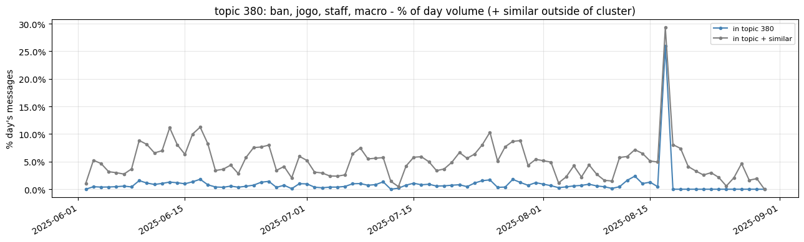

Guilherme Almeida

Senior Data Scientist with 6+ years of experience in analytics, across customer service and legal-process domains. Graduated in Systems Analysis and Development, with an MBA in Data Science from FIAP.
First place in the FIAP Data Science MBA challenge.
View my LinkedIn Profile
Selected projects in data, analytics and machine learning
Topic Modeling & Trend Detection in Chat
A BERTrend-style pipeline that turns ~261k timestamped chat messages into evolving topics and flags which ones spike. Messages are embedded with BGE-M3 and clustered day by day (UMAP + HDBSCAN), with centroid merging that gives each topic temporal continuity. Bursts are detected with a robust, leak-free z-score (median/MAD over a trailing window) and then validated by semantic consolidation — answering "what blew up, when, and does it hold up?"
